导论
首先欢迎你来到这个教程，既然你会打开这个教程，想必你心中有了开发一个属于自己的mod的念头吧。
正好，这个教程也是为这个目的服务的。但是开发一个属于自己的mod并不是一件容易的事情，你需要学习非常多的知识才能达成这个目标，阅读和跟随这个教程只是非常浅显的部分。
首先我想让你思考一个问题：你需要自己从头开发一个mod吗？
其实对于大部分人的需求，从0开发一个mod并不是必须的。有非常多其他的办法可以达成他们的目标：原版内置的机制，MCcreater和ZenScript等。
如果你的答案是确定的，那么第二个问题：你真的需要亲自写一个mod吗？
Mod开发需要编程和一定的计算机科学的基础，要学好这些并不容易，如果你是一个不会编程的人，或者只是初略的学过编程，我的建议是寻找同伴。美工和设计在Mod开发里都是和写程序是同等重要的。
如果你对上面两个问题的答案都是肯定的，那么我觉得你可以开始阅读这个教程了。在这个教程里，我会假设你有一定的计算机科学常识，熟悉Java编程的基础。
那么如果你现在还不会编程怎么办？没关系，这里有个教程推荐给你：Minecraft mod 开发编程入门
许可证

This work is licensed under a Creative Commons Attribution-NonCommercial-NoDerivatives 4.0 International License.
Forge是什么
本教程是一个基于Forge的Mod开发教程，那么自然而然的要回答一个问题：「Forge是什么？」
乍一看，这个好像根本就不是一个问题，「Forge？Forge不就是Forge吗？」看到这个问题的你内心中的第一个浮现出的想法估计就是这个。
但是回答这个问题还是非常有必要的，接下去我会稍微讲一讲Forge是什么，以及Forge的历史。这些看上去和我们教程无关的内容，其实是Mod开发领域的「乡谣（Lore）」，比如srg名和notch名是什么，mcp又是什么？
首先我们得从Minecraft本身说起，首先我们得明确Minecraft是一个用Java写成的商业软件。这意味着两件事：Minecraft相对于容易被修改，代码本身是不开源而且是被混淆过的。因为长时间的Mojang都没有给Minecraft提供官方API1，所以「Mod Coder Pack」项目诞生了（以下简称为MCP）。
还记得我之前说过的，Minecraft的两个特性吗？MCP就利用的着两个特性，实现了一套工具可以让开发者可以直接修改Minecraft jar包里的内容。
于是 srg 名，notch名和mcp名称诞生了。
那么这三个是什么呢？
首先是notch名，他是Minecraft直接反编译反混淆之后的名称，通常是无意义的字母数字组合。你从名称Notch就可以看出，这个名字是直接来自Minecraft（以及对Notch的怨念），举例来说 j就是一个典型的notch名。
接下来是srg名，这个名字是和notch名是一一对应的，srg名在一个版本里是不会变动的，之所以叫做srg名，是为了纪念MCP项目开发的领导者Searge。在srg名阶段，Minecraft中的类名已经是可读了，变量方法等名称虽然还是不可读，但是有相对应的前缀和尾缀来区分了。以上面的j为例，它的srg名是func_70114_g。
最后是mcp名，这个名称也是我们mod开发中接触最多的名称，在mcp名阶段，代码已经是可读的了。和我们正常写Java程序中的名称没什么两样。但是mcp名是会变动的。举例来说上面的func_70114_g它的mcp名是getCollisionBox。mcp名中的类名和srg名中的类名是相同的。
接下来我们来讲Forge，随着时间的发展，Mod开发者们意识到，直接修改Jar文件写mod的方式太过于粗暴了，而且Mod和Mod之间的兼容性可以说基本没有，Mod开发者们急需一种工具可以方便的开发Mod，而且能保证mod和mod直接的兼容性，于是Forge就诞生了。
Forge其实就是一套通过修改Minecraft方式实现的第三方API，而且随着时间的发展，MCP现在已经死亡了，除了Forge这套API，Fabric也风头正盛，而Forge本身也在Minecraft 1.13版本到来之后经历了一次重写，添加了引入了大量函数式编程的API。
那么我们上面提及的三个名字在Forge中是怎么使用的呢？
在你安装完Forge之后，游戏的运行过程中，所有的内容都会以srg名运行，你编译好的mod同样也会被混淆成srg名，保证它可以正常运行。
API 即 「Application programming interface（应用程序接口）」，是程序的提供的一种机制允许第三方修改或者添加功能。
Minecraft如何运作的
这节的内容非常重要，你必须在自己的大脑中搭建起Minecraft运行的模型图像，不然之后很多概念你会很难理解。
在这一节中，我将介绍一下Minecraft大体上是怎么运作的，以及一个非常重要的概念「端」。
Minecraft大体上属于「C/S架构（客户端/服务端架构）」。那么什么是「服务端」，什么又是「客户端」呢？
从名字上其实就能看出大概的意思，「服务端」是提供服务的，「客户端」是用户直接使用的。那么这两个端在Minecraft中是怎么体现的呢？
在Minecraft中两个端的职责区分如下：
-
服务端
复杂游戏的逻辑，数据的存储和读写。
-
服务端
接受用户的输入输出，通过来自服务端的数据渲染游戏画面。
值得注意的是，这里客户端和服务端的区分是逻辑上的区分。实际上如果你处于单人模式，那么你的电脑上会同时存在服务端和客户端，而且他们处于不同的线程1。但是当你连接某个服务器是，你的电脑上只存在客户端，而服务端被转移到了远程的一台服务器上。
下面一张图大概的解释了Minecraft是怎么运作的。

看到这张图，你可能觉得奇怪，说好的是服务端负责游戏逻辑的呢，为什么客户端也有数据模型？其实这里的「客户端数据模型」只是「服务端数据模型」一个副本，虽然它们都有独立的游戏Tick，也共享很多相同的代码，但是最终逻辑还是以服务端为准。
之前我们提到，客户端和服务端是独立运行的，但是它们不可避免的需要同步数据，而在Minecraft里，所有客户端和服务的的数据同步都是通过网络数据包实现的。在大部分时候原版已经实现了数据同步的方法，我们只需要调用设计好的方法就行，但是在一些情况下，原版没有提供这个功能，或者不适合使用原版提供的功能，我们就得自己创建和发送网络数据包来实现数据的同步。
那么接下去的问题是，我们怎么在代码中区分我们是处于客户端还是服务端呢？
Minecraft的World中有一个isRemote方法，当处于客户端是这个变量值为真，当处于服务端时这个变量值为假。
线程是程序调度的单位之一，处于不同的线程意味着这两个的逻辑和数据是互相独立的，只能通过特定的方法同步数据。具体来说，服务端处于「Server thread」，客户端处于「Render thread」，如果你有观察过Minecraft启动时的输出日志，应该会看到这两个词。
开发模型
在这节中，我们将会粗略的讲一讲Minecraft mod的开发模型是什么样子的，理解这个模型将有助于你理解mod开发中的很多操作是为了什么。
在我看来，Minecraft mod 开发基本上遵循了「事件驱动模式」，这里我们不会详细的讨论纠结什么时「事件驱动模式」你只需要有一个感性的了解即可。
那么在Minecraft「事件驱动模式」是怎么样子的呢？要回答这个问题，我们得先理清三个概念：「事件」「总线」和「事件处理器」。
首先什么是「事件」呢？就跟这个词表示的那样，「事件」就是「发生了某件事」。举例来说「当方块被破环」这个就是一个事件，「当玩家死亡」这个也是一个事件，当然我们前面举的都是非常具体的例子，事件也可以很抽象，比如「当渲染模型时」这个也是一个事件。
接下来什么是「事件处理器」呢？事件处理器就是用来处理「事件」的函数。我们可以创建一个事件处理器来处理「方块破坏事件」，里面的内容是「重新创建一个方块」，可以注册一个事件处理器来处理「玩家死亡事件」，里面的内容是「放置一个墓碑」。
最后是「总线」，总线是连接「事件」和「事件处理器」的工具，当「事件」发生的时候，「事件」的信息将会被发送到总线上，然后总线会选择监听了这个「事件」的「事件处理器」，执行这个事件处理器。

注意这张图里的事件和事件处理器是没有先后顺序的。
在Minecraft中，所写的逻辑基本上都是事件处理。
在Forge开发里有两条总线，Mod总线和Forge总线，所有和初始化相关的事件都是在Mod总线内，其他所有事件都在Forge总线内。
一些核心概念
在这一小节中，我会讲几个不难理解但是非常重要的概念。
注册
如果你想往Minecraft里添加一些内容，那么你必须做的一件事就是注册。注册是一种机制，告诉游戏本身，有哪东西可以使用。你注册时需要的东西基本上可以分成两个部分：一个注册名和一个实例。
ResourceLocation
你可以把ResourceLocation想成一种特殊格式的字符串，它大概长成这样:minecraft:textures/block/stone.png，一个ResouceLocation指定了资源包下的一个特定的文件。举例来说，前面这个这个ResourceLocation代表了原版资源包下的石头的材质图片。ResouceLocation分成两部分，冒号前面的叫做「域（domain）」，在原版中只有一个域即minecraft域，但是如果你开始开发mod，那么每个mod都会有一个或者多个域。冒号的后半部分是和assets文件夹内的目录结构一一对应的。从某种程度上来说，ResourceLocation就是一个特殊的URL。
模型和材质
在游戏中3d的对象都是基本上都有它的模型，模型和材质组合在一起规定了一个对象具体的样子。模型相当于是骨头，材质相当于是皮肤。在大部分时候，你的材质都是png图片，请注意保证你的材质背景是透明的，其次不要在材质中使用半透明像素，会有不可预知的问题。
环境配置
在这一节中，我们会讲解如何配置Forge的开发环境。（在这一节会劝退大部分人）
Forge开发环境的配置
需要的工具
-
JDK8，出于兼容性的考虑，请确保你安装的是JDK8。
-
IntelliJ IDEA 2020.1 社区版，下载完成后请自行安装，介于目标读者的水平，这里有个如何给2020.1之后版本安装官方中文的教程。
-
Forge MDK 1.15.2 - 31.1.0，下载后请解压到你喜欢的文件夹。
注意，介于预想读者的水平，配置过程十有八九是会失败的，建议直接使用离线包，安装完离线包之后继续按照下述教程进行配置。
总体的介绍
Minecraft Forge是一个Gradle项目，Gradle是一个项目构建工具，其主要作用是负责项目的依赖管理，构建等功能。依赖管理指的是帮你自动的下载配置你开发中使用的库，也就是别人写好的方便你自己开发的代码。构建指的是将你写的的mod打包成别人可以安装的jar文件。
Forge官方写了一个叫做ForgeGradle（以后简称FG）的插件来负责整个mod开发环境的配置（为什么要说这个呢，让你知道当环境配置失败时该骂谁)。
IDEA的编码配置（Windows用户专用）
选择Configure下的设置/首选项。

选择编辑器=>文件编码，将右侧所有涉及到编码全部改成UTF-8，并把创建UTF-8文件改成With NO BOM。

开始配置
首先选择启动页面的打开或导入。

选择你MDK解压目录下的build.gradle打开。
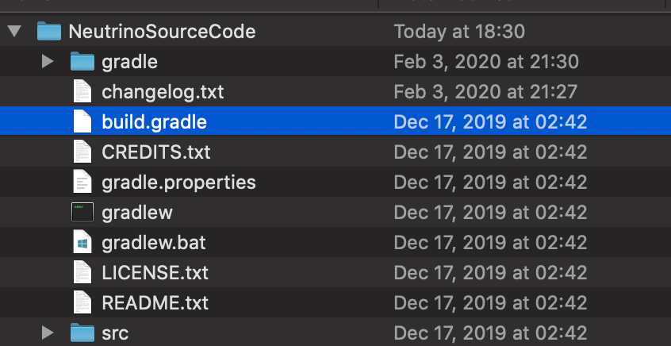
选择作为项目打开

打开之后，根据你网络情况和电脑自身的情况，会有或长或短的导入时间，这个过程需要下载很多的依赖包而这些依赖包都存放在海外，介于中国大陆网络封锁策略导致海外网络访问不稳定，这个时间将会持续几分钟至几天不等，而且很有可能失败，对于有代理的同学可以自行搜索「Gradle配置代理」来给Gradle加上代理。
当导入结束，点击下方的build面板，左侧显示绿勾时说明导入成功。

当导入完成后，点击运行右侧的Gradle面板，选择其中的Tasks下fg_runs下的genIntelliJRuns。
在这一步中，会自动下载剩余的一些依赖，以及Minecraft本体和资源文件。出于和上面相同的理由，这个过程耗时会很长，并且非常容易失败。
同样的当左侧显示「绿勾」时说明配置成功。
点击上方的运行=>编辑配置。
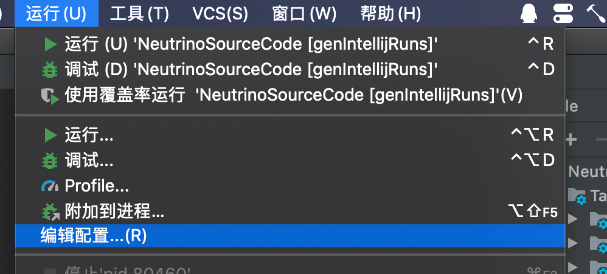
选择应用程序下的三项，将其使用模块的类路径改成你文件夹名.main，点击确定保存。

配置完成之后，选择调试。
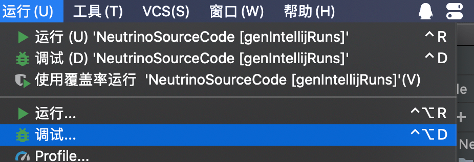
然后选择RunClient即可启动游戏。

在没有为Gradle配置代理的情况下，runClient有时候会耗费非常多的时间，推荐大家购买并配置代理，或者这个教程也是一种解决办法。
可以看见我们的游戏成功启动了。
如果大家嫌控制台输出太多，可以在虚拟机选项中将-Dforge.logging.console.level=的值改成info。
JDK常见错误
如果你的电脑里有多个JDK，有可能IntelliJ自动选择的JDK是错误的，导致无法导入，你需要手动修改项目的JDK和Gradle运行所需要的JDK。
选择文件下的项目结构。

将项目JDK改成1.8版本

接下去修改gradle的版本，出于一些奇怪的原因，在装了中文插件之后，就无法修改gradle的JDK了，所以首先你得先在设置面板停用中文插件。

然后按照下图，到设置面板，将Gradle VM改成Project JDK
之后再到Plugin下的Installed重新启动中文插件即可。

开发环境的介绍
在这一节中，我会介绍一下Mod开发产生的一系列文件和文件夹，以及它们的作用。
首先最为重要的一个文件便是:build.gradle，这个文件是Gradle的配置文件，它规定了Mod的项目是如何构建，有哪些依赖，如何配置等。
其中的minecraft 闭包下的内容就是关于Forge Gradle的配置。
其中mappings channel: 'snapshot', version: '20190719-1.14.3’配置项规定了本项目使用的mapping文件版本，这里我强烈建议你经常更新mapping文件，你可以在这里找到所有的mapping文件。那么什么是mapping文件呢？还记得我们之间提及的srg名和mcp名吗？mapping文件的作用就是提供srg名和mcp名之间的翻译。
channel的意思是mapping文件的分类，在大部分情况下，你都应该使用snapshot（快照版本）来确保你的mcp名字是最新的。而之后的version就是具体的版本了，大部分情况下是高版本游戏兼容低版本mapping的，当然游戏版本号不能相差太远。其中还有两个被注释起来的参数，这里我们暂且不提。
另外一个你可能会用的就是dependencies配置，如果你的mod需要依赖别的java库或者别的mod，你需要在这里添加内容，具体添加的方式，注释已经给出了详细的例子，这里就不多说了。其中minecraft 'net.minecraftforge:forge:1.15.2-31.1.0’规定了你需要用到的Forge版本，如果你想升级Forge版本可以修改这一行的内容，版本的格式是net.minecraftforge:forge:游戏版本号-Forge版本号。
这个文件剩余的部分就和一个普通的build.gradle没什么差别了，如果想知道更详细的知识建议去学习Gradle。
接下去的就是src文件夹，这里是放我们代码和文件的地方，其中main文件夹是具体运行代码和文件的地方，test文件夹是放测试代码的地方。main文件夹下的java就是放我们写的java代码的地方，而resources文件夹里放的则是我们的材质模型等一些不是代码，但是mod内容一部分的东西。
接下去是run文件夹，这个基本上就是一个标准的.minecraft文件夹，值得注意的是，因为开发环境是同时有Minecraft客户端和服务器代码的，它们两个是共用run目录的。
剩下值得一提的就是build目录，当你在Gradle面板里运行build任务，你的mod就会被打包好放在build=>libs下。
剩下所有带gradle相关的文件夹和文件都是Gradle所需要的运行和配置文件，请不要随便删除。
自定义mod信息
从这节起我们就会开始正式的写我们mod了！
更新Mapping
在开始之前我们需要更新一下Mapping文件，如果不知道Mapping文件的作用，请向前翻阅。再提醒一次，你可以在这里找到最新的mapping文件。
在我写这段时，1.15最新的mapping文件是20200426-1.15.1。
于是我们需要将build.gradle下的mappings channel: 'snapshot', version: '20190719-1.14.3’修改为mappings channel: 'snapshot', version: '20200426-1.15.1’。

然后点击右侧Gradle面板的重新导入按钮，重新导入项目，因为build.gradle文件非常的重要，请注意不要改错。
这个过程可能会涉及下载文件（但不会很多），有错误的可能性，出错了请检查你的build.gradle内容有没有填错，然后多试几次。
配置
首先我们先选中java文件夹下所有的目录和文件，然后右键删除Java包下的默认类。
然后再右键新建立一个包
在默认情况下你的包名应该是你的域名的倒写，因为我不想用自己的域名举例子，所以这里我填入的内容是com.tutorial.neutrino。
创建完成以后右击创建一个Java类，名字叫做Neutrino，请注意大小写，在默认情况下Java的类名遵循「帕斯卡命名法」1。
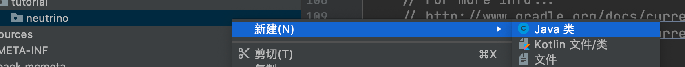
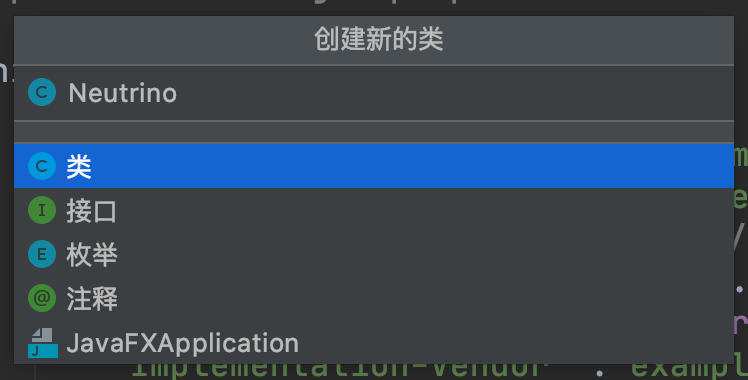
创建完成后目录树如下：
java
└── com
└── tutorial
└── neutrino
└── Neutrino.java
然后进入Neutrino在类名的上方添加一个@Mod()注释，其中填入的参数是你的modId，那么什么是你的modId呢？modId就是你mod名字的唯一标识符，请注意modId和你的mod名字并不是同一个东西，它不允许大写字母，也不允许空格等内容。在这里我们选用的modId是neutrino。添加完成后内容如下:
@Mod("neutrino")
public class Neutrino {
}
接下来我们需要去修改处于resources=>META-INF下的mods.toml。在默认情况下IntelliJ是没有对Toml文件语法高亮的，如果你需要像我一样的语法高亮可以去安装一个Toml插件，安装方式和你安装语言包是一样的。
mods.toml是我们mod信息的配置文件，在这里我们可以修改我们mod的名字，介绍等内容。其中有许多配置项，如果一个配置项的注释里含有#mandatory说明这个配置项是必须的，如果注射里写的的是#optional，说明这个配置项是可选的，你可以在配置项前面加上#来注释掉这个配置项。
| 配置项 | 作用 |
|---|---|
| modLoader | 规定mod的Loader，大部分情况下不需要修改 |
| loaderVersion | 规定了mod运行的Forge版本，大部分情况下不需要修改 |
| issueTrackerURL | 可选，你的Mod Bug提交地址，按需修改 |
| modId | 必填，这里需要填入你的modId，和代码中的要保持一致 |
| version | 必填，一般情况下保持默认即可 |
| displayName | 必填，显示名称，你的mod在Mod界面的显示名称 |
| updateJSONURL | 可选，你的mod的更新链接 |
| displayURL | 可选，你的mod介绍网页的链接 |
| logoFile | 可选，你的Mod的Logo |
| credits | 可选，你的Mod的致谢名单 |
| authors | 可选，你的mod的作者名单 |
| description | 必填，你的mod在mod界面的介绍 |
接下剩下的都是依赖，Forge官方的例子已经写的很清楚了，这里我们不多加说明
我修改完的mods.toml如下:
modLoader="javafml"
loaderVersion="[31,)"
[[mods]] #mandatory
modId="neutrino"
version="${file.jarVersion}"
displayName="Neutrino"
authors="FledgeShiu"
description='''
这是我们的教学mod！
'''
现在我们已经修改完我们的mod信息了，现在让我打开游戏。
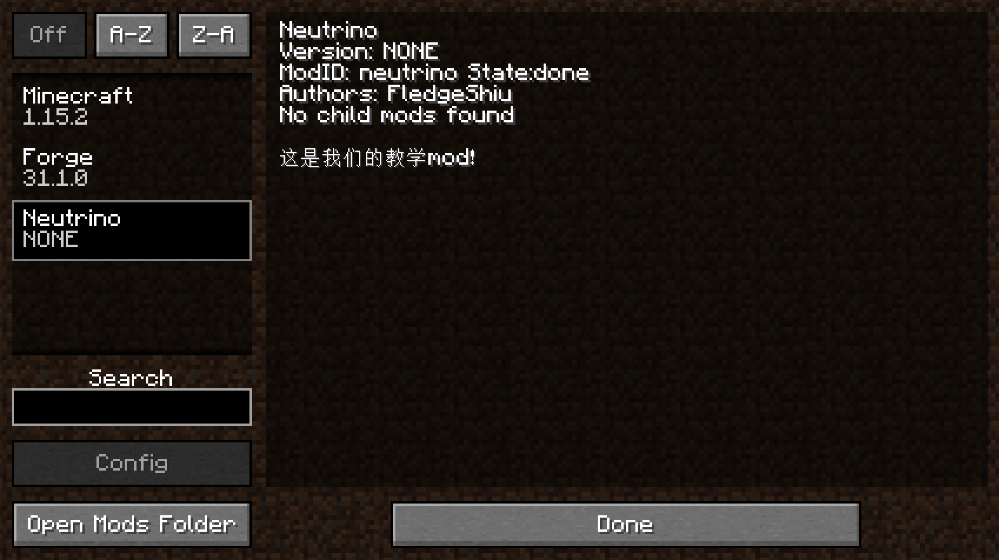
可以看见我们的Mod已经出现了！
开发小课堂
介于目标读者的水平，在这里特增「开发小课堂」环节。
在这次开发小课堂中，我们来讲一讲「日志」，日志你在开发过程中最重要的Debug工具之一，在向别人提问时，你需要提供的三样东西中的其中一项，另外两项是完整的代码和问题清晰到位的问题描述。
如果代码出了问题，你首先需要做的事就是阅读日志，什么你说全英文的看不懂怎么办？现在这么多翻译网站随便找一个把日志粘贴上去翻译啊。
「帕斯卡命名法」的意思是：名字中所有的单词首字母都是大写，比如「HelloWorld」
物品
物品时Minecraft中的基本元素之一，在这一节中，我将介绍如何创建物品。
第一个物品
从现在开始我们就要正式开始写代码了。首先有几件事要说明，本项目的代码都会开源，每节的代码链接我都会放在文章的后面，而为了之后修正和查看的方便性，我的代码中可能会有大量的重复的类，项目的组织也和正常项目大相径庭，大家请不要照抄，请大家务必手打代码，你复制粘贴代码是学不会的。
首先我们得明确，创建一个物品需要哪几个步骤。答案是三步：创建自己的物品并继承原版的物品的类，实例化这个物品最后把这个物品注册进游戏。
注意上面这些步骤是通用的，很多自定义内容的添加都是遵循着上面这个步骤。
知道了上诉步骤之后，我们就开始添加我们的第一个物品吧，在这里我们将添加一个黑曜石碇。
首先我们需要创建一个要创建物品的类，并且让这个类继承原版的Item类（介于目标读者的水平，Item就是物品的英文）。
public class ObsidianIngot extends Item {
public ObsidianIngot() {
super(new Properties().group(ItemGroup.MATERIALS));
}
}
这个类的代码非常简单，就是只有一个构造器。
这里唯一值得一说的就是new Properties().group(ItemGroup.MATERIALS)，这个Properties规定了物品的一些属性，比如是不是食物又比如这个物品在创造模式的哪一个物品栏。
在这里我们创建了一个Properties并且调用了group方法然后传入了ItemGroup.MATERIALS的作用是让这个物品可以在原版的「杂项」创造模式物品栏里。当然你也可以不调用 group方法，这样的话就只有通过/give命令才能获取到物品了。
接下去我们需要实例化和注册这个物品，在以前这个是分开的两步，但是在Forge加入了一个叫做DeferredRegister的机制，使得注册一个物品变得非常的简单。
public class ItemRegistry {
public static final DeferredRegister<Item> ITEMS = new DeferredRegister<>(ForgeRegistries.ITEMS, "neutrino");
public static RegistryObject<Item> obsidianIngot = ITEMS.register("obsidian_ingot", () -> {
return new ObsidianIngot();
});
}
这个就是注册的全部内容，首先我们创建了一个类型为DeferredRegister<Item>名字叫做ITEMS的变量，这个类型表明我们需要注册的东西是物品，然后通过new DeferredRegister<>(ForgeRegistries.ITEMS, "neutrino”);实例化了这个类，这个类里有两个参数ForgeRegistries.ITEMS代表了我们要注册的是物品，第二个参数填入的应该是你的modId。这样我们就创建好了注册器，接下去就是注册我们的物品。
还记得我之前说过的吗？注册需要的是两个东西，一个是「注册名」，还有一个就是你要注册对象的实例，ITEMS.register里的两个参数就是分别对应了这两个东西。
public static RegistryObject<Item> obsidianIngot = ITEMS.register("obsidian_ingot", () -> {
return new ObsidianIngot();
});
第一个参数很好理解”obsidian_ingot”就对应着注册名，请注意这里的注册名也不要用大写字母，第二个参数看上去非常复杂，但是其实也挺简单的。
首先我们先来看一下ITEMS的register的函数签名。
public <I extends T> RegistryObject<I> register(final String name, final Supplier<? extends I> sup)
从这个函数签名里可以看见，第二个参数的类型是Supplier<? extends I>，这意味着你要传入的是一个没有参数的「闭包」，而且这个「闭包」是得有返回值的。
那么什么是「闭包」呢？
() -> {
return new ObsidianIngot();
}
这个就是一个闭包，当然这是一个没有传入参数而且有返回值的闭包，闭包也可以有参数，也可不需要返回值。
(T) ->{
System.out.println(T);
}
//这只是演示代码
上面这个「闭包」就是传入一个参数，没有返回值的「闭包」。
回到我们的mod开发。
() -> {
return new ObsidianIngot();
}
这个闭包的意思就是返回一个我们之间创建的黑曜石类的实例。
你看，虽然我们没有显式声明变量，但是我们还是在注册时实例化了新物品的类。
还差最后一步，我们就可以添加成功物品了。
@Mod("neutrino")
public class Neutrino {
public Neutrino() {
ItemRegistry.ITEMS.register(FMLJavaModLoadingContext.get().getModEventBus());
}
}
我们在我们Mod主类的构建方法里添加了一行代码，FMLJavaModLoadingContext.get().getModEventBus()这句话的意思是获取Mod总线，如果你不知什么是Mod总线请向前翻阅。而ITEMS.register(FMLJavaModLoadingContext.get().getModEventBus());的意思就是将ITEMS注册进Mod总线里。为什么要注册进Mod总线里呢？原因是，其实DeferredRegister也是基于事件系统实现的。
到这里，我们要添加的第一个物品的代码已经写完了，打开游戏看看吧。
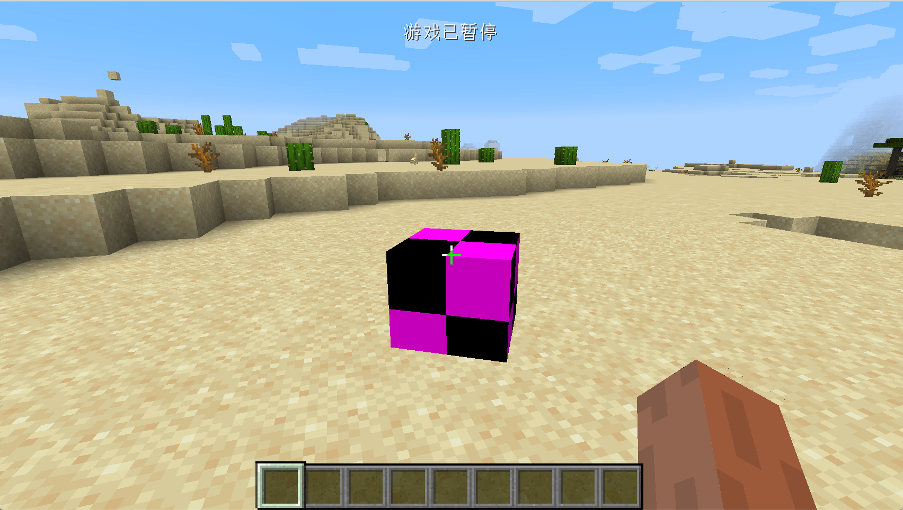
虽然这个物品还是很丑，但这就是我们第一个物品了。
开发小课堂
在开发大型项目的过程中，通过看函数名猜函数功能，这是一个非常重要的能力。当你不清楚一个函数的功能是什么，就翻译翻译它的名字猜猜看它的功能吧。
另外一个就是要学会看函数签名，理解一个函数最重要一点就是要理解它的输入是什么（参数），它的输出是什么（返回值）。
物品材质与模型
在上一节中我们已经成功添加了我们的第一个物品，当然那个物品还很丑，在这一节中我们将会为它添加模型和材质。
首先按照如下目录在resources创建文件夹。
resources
├── META-INF
│ └── mods.toml
├── assets
│ └── neutrino
│ ├── models
│ │ └── item
│ └── textures
│ └── item
└── pack.mcmeta
其实assets下就是一个属于Mod的材质包，具体的目录结构等，读者可以自行寻找当前游戏版本的材质包制作教程学习。
接下来我们来添加模型文件，首先在在models下的item里创建一个和你创建的物品相同注册名的json文件，在我们的例子里就是obsidian_ingot.json。
内容如下:
{
"parent": "item/generated",
"textures": {
"layer0": "neutrino:item/obsidian_ingot"
}
}
这里的内容非常简单:"parent": "item/generated”指定了这个模型的「父模型」是什么，而"layer0": "neutrino:item/obsidian_ingot”指定了具体的材质。neutrino:代表这个是在我们自己的assets文件下，item/obsidian_ingot代表了是textures/item/obsidian_ingot.png这张图片。
模型文件的详细格式大家可以自行阅读Wiki。
接下来我们在``textures/item/obsidian_ingot.png`下放入我们制作好的材质文件，请注意材质文件的比例是1:1，并且最好不要大于32x32像素。

这里的加载流程是：游戏先根据的你注册名获取相对应的模型文件，然后通过模型文件中的textures加载对应的材质文件。
创建完成的目录树如下：
resources
├── META-INF
│ └── mods.toml
├── assets
│ └── neutrino
│ ├── models
│ │ └── item
│ │ └── obsidian_ingot.json
│ └── textures
│ └── item
│ └── obsidian_ingot.png
└── pack.mcmeta
启动游戏之后你就可以看见我们创建的物品了。

开发小课堂
一个方便的工具用来制作方块和物品等模型：BlockBench。
Item和ItemStack
在这里，我想讲一下Item和ItemStack的区分。我们先从ItemStack开始一步一步思考为什么它们需要区分开。
ItemStack顾名思义就是「物品堆」。实际上在游戏中，所有物品槽里放着的物品都是单独的ItemStack。
比如在这种情况下，就有三个ItemStack。
但是这就引出了一个问题，虽然一组苹果和第二组苹果数量不同，但是这个数量其实并不影响他们的实际表现。它们同样可以被吃，吃了以后回复的效果也是相同的。
于是这些相当于「属性」或者「默认行为」是相同的，这些相同的就应该被抽出来，这就是Item。
还是以上图举例，这里就只有两种Item：苹果和铁剑。
你可以想象ItemStack就是Item的一个包装，它比起Item额外提供了数量，NBT标签等属性。
这里值得注意的是，ItemStack的数量为0，虽然代表是空了，这不代表它就变成null了，所以在你必须得用ItemStack下的isEmpty()方法来判断是否为空。
ItemStack中所包含的Item其实是同一个实例，原因非常简单，如果不是同一个实例，会无谓的产生非常多相同的实例，处于优化的考虑，当然是共用一个实例合适，这同时意味着你可通过result.getItem() == Items.AIR来判断ItemStack存放了哪一个Item。
至于更加详细的解释，harbinger已经写的很清楚了。
食物
在这一节中我们将会在Minecraft世界中添加一个新的食物：黑曜石苹果，吃了这个苹果以后你可回复饥饿但是会中毒。和很多人想象的不一样，食物并不是单独的一个东西，对于Minecraft来说，食物只是一种特殊的物品而已。
同样的我们先来创建一个类，让这个类继承Item
public class ObsidianApple extends Item {
private static EffectInstance effectInstance = new EffectInstance(Effects.POISON, 3 * 20, 1);
private static Food food = (new Food.Builder())
.saturation(10)
.hunger(20)
.effect(effectInstance, 1)
.build();
public ObsidianApple() {
super(new Properties().food(food).group(ItemGroup.FOOD));
}
}
我们一行一行的解释。
首先我们创建了一个EffectInstance，什么是EffectInstance？EffectInstance正如他名字暗示的那样是一个药水效果的实例。我们先来思考一下，原版的在玩家身上的药水效果都有哪些属性：效果的种类、时间以及药水登记。而EffectInstance就是这三种属性的一个集合。new EffectInstance(Effects.POISON, 3 * 20, 1)可以看到我们填入的三种属性分别是：原版的中毒药水效果（原版所有的药水效果都在Effects类内）、持续时间是3*20tick，药水等级为1。
接下来我们创建了一个Food类型的变量，这个变量规定了这个这个食物的一些属性，比如：saturation方法设置了饱食度，hunger设置了回复的饥饿度，effect方法设置了吃食物时可能会有的药水效果，其中第二个参数代表出发效果的可能性（想想原版的生鸡肉），这里我们设置成1代表100%触发。这里其实用到称为「建造者模式」的设计模式，有兴趣的同学可以自己查阅。
接下去就是构造方法，相比大家已经很熟悉了，唯一新的一点就是.food(food)，这个方法表明了这个物品是一个食物，最后我们把这个物品放在了「食物」创造模式物品栏里。
然后我们注册我们的食物，注册名是obsidian_apple:
public static RegistryObject<Item> obsidianIngot = ITEMS.register("obsidian_apple", () -> {
return new ObsidianApple();
});
然后添加模型obsdian_ingot.json:
{
"parent": "item/generated",
"textures": {
"layer0": "neutrino:item/obsidian_apple"
}
}
然后是材质obsidian_apple.png

拿出你的苹果试着吃吃看吧。

近战武器
在这一节中，我们讲解如何创建一个新的剑，这里我们以黑曜石剑举例。
同样的我们先创建一个ObsidianSword但是这次的继承的类有些不一样，这次我们直接继承原版的SwordItem类，如果你查看继承关系图，你就可以发现，SwordItem是Item的子类。
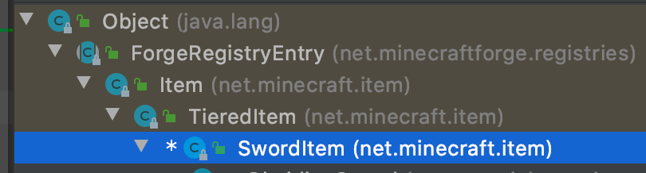
内容如下:
public class ObsidianSword extends SwordItem {
private static IItemTier iItemTier = new IItemTier() {
@Override
public int getMaxUses() {
return 2000;
}
@Override
public float getEfficiency() {
return 10.0F;
}
@Override
public float getAttackDamage() {
return 4.0F;
}
@Override
public int getHarvestLevel() {
return 3;
}
@Override
public int getEnchantability() {
return 30;
}
@Override
public Ingredient getRepairMaterial() {
return Ingredient.fromItems(ItemRegistry.obsidianIngot.get());
}
};
public ObsidianSword() {
super(iItemTier, 3, -2.4F, new Item.Properties().group(ItemGroup.COMBAT));
}
}
同样的，这个内容看上去非常的多，但其实并没有你想象那么复杂。
首先我们实现一个IItemTier接口的匿名内部类。首先什么是IItemTier呢？Tier的英文意思是「层、等级」，你可以把IItemTier理解成一种材质，比如钻石剑，钻石稿都是钻石做的，同样的铁剑，铁搞都是铁做的。
那么为什么要自己实现这个匿名内部类呢？原因是原版的net.minecraft.item.IItemTier是用enum实现的，我们没法自己向里面添加内容，所以只能自己实现了，原版的所有属性也都在这个类里，大家可以参考。至于这个匿名内部类里的各种方法，我在这里就不多加解释了，有了之前几个物品的经验，相信读者阅读到这里时已经有了通过函数名猜测函数功能的能力了。同样的关于构造函数里的3和-2.4F的作用也请读者参考原版物品的实现（原版所有物品的实例都写在net.minecraft.item.Items类中）猜测功能。
同样的接下去注册物品
public static RegistryObject<Item> obsidianSword = ITEMS.register("obsidian_sword", () -> {
return new ObsidianSword();
});
添加模型文件：
{
"parent": "item/generated",
"textures": {
"layer0": "neutrino:item/obsidian_sword"
}
}
以及材质

创建完成之后打开游戏看看吧。

开发小课堂
在开发的过程中你得熟练使用开发工具，在这里我们的工具是IntelliJ IDEA。有两个快捷键对于理解代码有非常大的帮助。第一个快捷键是Ctrl+N(Windows)，这个快捷键可以让你搜索指定的类，这样你就可寻找原版类里在哪里，有什么内容了。另一个快捷键就是Ctrl+H当你把鼠标指针发在一个类上时，按下这个快捷键，会在右侧显示这个类的继承关系，也可查看某个接口的具体实现，大家可以自己上网搜索IDEA常用快捷键学习使用。
另外一个技巧是，当你看到某个方法，想要知道这个方法在哪里调用时，可以右键然后点击Find Usages（查找使用，你就可以看见所有调用这个方法的代码了。
还有如果你想查看某个类的源代码，只需要按住Ctrl键，点击那个类就可以进入到那个类内部查看它的源代码。
自定义创造模式物品栏
在这一节中，我们将研究如何创建一个属于自己的创造模式物品栏，非常简单。
首先创建一个类，让它继承ItemGroup，内容如下:
public class ObsidianGroup extends ItemGroup {
public ObsidianGroup() {
super("obsidian_group");
}
@Override
public ItemStack createIcon() {
return new ItemStack(ItemRegistry.obsidianIngot.get());
}
}
第一个方法用于设置创造模式物品栏的标题名，第二个提供了创造模式物品栏的图标，这里我们用了黑曜石碇作为图标，请注意这个函数的返回值类型是ItemStack，而不Item。
然后我们需要在实例化这个类，创建ModGroup
public class ModGroup {
public static ItemGroup itemGroup = new ObsidianGroup();
}
内容如上，应该不用过多解释。
创建完成以后想要调用这个物品栏也非常简单，我们以黑曜石碇举例。
public class ObsidianIngot extends Item {
public ObsidianIngot() {
super(new Properties().group(ModGroup.itemGroup));
}
}
此时打开游戏我们的黑曜石碇应该就在指定的物品栏里了。

语言文件与本地化
在这一节中，我们将学习如何给我的物品添加名称。
在前面的章节，我们创建的物品都是没有一个有意义的名字的，在这一节中我们将给他们加上一个有意义的名字。
在Minecraft中，文件的名字是以语言文件的形式提供的，在1.15的版本，语言文件是个json文件，它大概内容如下:
{
"language.name": "English",
"language.region": "United States",
"language.code": "en_us",
"narrator.button.accessibility": "Accessibility",
"narrator.button.language": "Language"
}
可以看见一个语言文件其实就是一个键值对，其中对键是一个游戏中的编号，其中对值就是具体的翻译。这么做的原因是Minecraft要支持非常多国家和地区的语言，各个语言如果直接硬编码进游戏里显然是不具备可维护性的。在默认情况下，如果你没有给在游戏中给需要翻译的对象添加相对应的翻译，那么它默认显示的就是这个翻译的「键」。
以我们的黑曜石碇举例:

目前我们还没有为它添加名字，它所显示的item.neutrino.obsidian_ingot就是默认的键值。当然大家也可以自定义键值，Item类里有相对应的方法可以实现这点，正如我之前所说的，在Minecraft源代码里和通过函数名猜测功能是Mod开发必备的能力，所以这里相当于一个小测试，请大家自己寻找可以修改这个键的办法。
但是在有些时候，游戏无法默认的给我的内容自动添加键，这时我们就得自己创建一个键，Minecraft提供了一个叫做I18n.format的方法让我自己创建，具体的使用方式，我们之后会讲到。
接下来让我创建语言文件吧。
首先在neutrino文件夹下创建一个叫做lang的文件夹，创建成功后目录树如下:
resources
├── META-INF
│ └── mods.toml
├── assets
│ └── neutrino
│ ├── lang
│ ├── models
│ │ └── item
│ │ ├── obsidian_apple.json
│ │ ├── obsidian_ingot.json
│ │ └── obsidian_sword.json
│ └── textures
│ └── item
│ ├── obsidian_apple.png
│ ├── obsidian_ingot.png
│ └── obsidian_sword.png
└── pack.mcmeta
这里我们以简体中文举例举例。
首先创建一个叫做zh_cn.json的文件，内容如下。
{
"item.neutrino.obsidian_ingot": "黑曜石碇",
"item.neutrino.obsidian_apple":"黑曜石苹果",
"item.neutrino.obsidian_sword":"黑曜石剑",
"itemGroup.obsidian_group": "黑曜石物品栏"
}
然后启动游戏，调成简体中文，你应该就可以看见我们的物品有了翻译。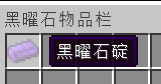
作为一个简体中文的使用者，你的mod里至少应该有zh_cn.json，en_us.json和zh_tw.json者三个语言文件，所有可用的语言文件列表请在Wiki的语言#可用语言内查看。
方块
我们在这节中终于要进入Minecraft中最为迷人的其中一部分：方块。当然我们会从最为简单的方块开始学起。
第一个方块
在这一节中，我们将会创建一个最简单的方块，一个什么功能也没有的方块，甚至连模型和材质也没有。在开始之前我必须做一个概念上的区分，关于物品和方块概念上的区分。任何你可在拿在手中的东西都是「物品」，只有放置在世界中才成为了「方块」。

这个是一个物品
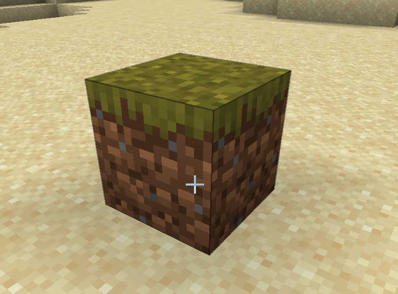
这个才是一个方块。
好的，我们已经把物品和方块之间的区别说清楚了。接下来就开始创建第一个方块吧，这里我们以黑曜石块举例。
首先创建一个类，叫做ObsidianBlock，就和所有的自定义物品需要继承Item类一样，所有的自定义方法都需要继承Block类，请确保你的Block类是net.minecraft.block.Block这个类。
具体内容如下:
public class ObsidianBlock extends Block {
public ObsidianBlock() {
super(Properties.create(Material.ROCK).hardnessAndResistance(5));
}
}
内容非常简单，就和Item有Properties一样，方块也需要一个Properties，和物品的Properties不太一样的是，方块的Propeteis需要调用create方法创建。请注意虽然这两个Properties名字相同，但是它们不在同一个包内，这其实是两个不同的类，create方法需要一个参数，这个参数是一个Materia（材料），Material帮你预设了一些方块的特质，比如是否是实心的，是否是流体等，当然你可以通过调用Properties的方法来覆盖Material带来的特征，这里我们用的是原版的Material.ROCK，如果你想自己创建一个Material也非常简单，请参考原版的实现。然后我们调用hardnessAndResistance方法来为我的方块设置硬度。
致辞我们的黑曜石方块类已经创建完毕。就如物品需要注册一样，我的方块也需要注册。
创建一个新的注册类BlockRegistry，内容如下:
public class BlockRegistry {
public static final DeferredRegister<Block> BLOCKS = new DeferredRegister<>(ForgeRegistries.BLOCKS, "neutrino");
public static RegistryObject<Block> obsidianBlock = BLOCKS.register("obsidian_block", () -> {
return new ObsidianBlock();
});
}
相信之前已经写过注册类的你对这些内容应该相对熟悉了。我们把DeferredRegister<Item> 换成了DeferredRegister<Block>（当然后面的实例化参数也需要修改），这样我们就创建了一个方块的注册器。注册方式也和物品注册如出一辙，这里就不多加阐述了。
当然，你还需要在你的主类构建函数里，将这个注册器注册到mod总线中。
@Mod("neutrino")
public class Neutrino {
public Neutrino() {
ItemRegistry.ITEMS.register(FMLJavaModLoadingContext.get().getModEventBus());
BlockRegistry.BLOCKS.register(FMLJavaModLoadingContext.get().getModEventBus());
}
}
到此，我们就已经完成了我们的方块，现在启动游戏，输入如下命令，你就可以放置你自己的方块了。
/setblock ~ ~ ~ <你的modID>:<你的方块的注册名>
以我们的例子来说
/setblock ~ ~ ~ neutriono:obsidian_block

当然，只能通过命令放置的方块显然不符合我们的胃口，我们希望有一个物品可以和方块相对应，这样我们就可以不需要使用命令的放置方块了，当然对于这个常见的需求，Minecraft 也提供了一个方便的类来满足，这个类就是BlockItem，我们只需要创建这个实例化一个这个类就行了。
我们回到我们的ItemRegistry，添加如下一行
public static RegistryObject<Item> obsidianBlock = ITEMS.register("obsidian_block", () -> {
return new BlockItem(BlockRegistry.obsidianBlock.get(), new Item.Properties().group(ModGroup.itemGroup));
});
可以看见我们创建了一个BlockItem的实例，它的构建方法需要两个参数，第一个参数是你注册好的方块的实例，我们可以通过BlockRegistry.obsidianBlock.get()获取到之前注册好的方块实例，第二个参数是一个Item的Properties，这里的Properties非常简单，我们将其添加到里我们之间创建的创造模式物品栏里。
此时打开游戏，你就可以在我们的创造模式物品栏里看见我们的方块了。


Block和BlockState
在开始我们接下来的讲解之前我想先来讲一下BlockState这个概念，相信已经对ItemStack有所了解到你，对这个概念应该不会感到难以理解。
就和在游戏中的所有物品其实是Itemstack一样，在游戏中的所有方块其实是BlockState，而BlockState相比起Block除了多出的XYZ位置信息之外，最为重要的就是state信息，也就是状态信息。状态信息乍一看很难以理解，但是其实非常好懂。我们以原版的栅栏举例，当你把原版的栅栏发在地上，栅栏会根据周围方块的不同自动的改变形状，这其实是栅栏自动的改变了状态，我们可以在F3调试模式下查看方块的状态。

这是在默认方块状态下的栅栏模型。
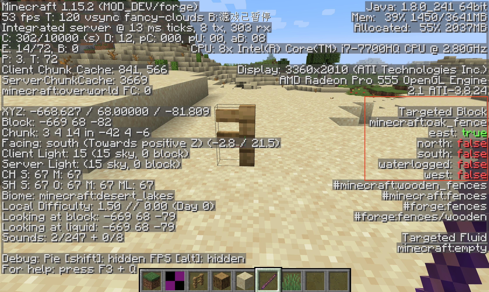
可以看到我们使用Debug Stick修改了栅栏的方块状态之后，方块的模型也相应的发生了改变。
当然，不是所有的方块都有状态属性的，比如石头就没有，但是位置属性是每个方块都有的。
方块模型和材质
我们的已经成功的创建了一个方块，但是这个方块还很丑，就是一个紫黑怪物而已。在这一节中，我们就要来为这个方块添加模型的材质。
首先我们创建一些文件夹，创建成功后的目录如下显示:
resources
├── META-INF
│ └── mods.toml
├── assets
│ └── neutrino
│ ├── blockstates
│ ├── lang
│ ├── models
│ │ ├── block
│ │ └── item
│ └── textures
│ ├── block
│ └── item
└── pack.mcmeta
然后我们在blockstates文件夹下创建一个和你物品注册名同名的json文件，这里我们要创建obsidian_block.json
内容如下:
{
"variants": {
"": { "model": "neutrino:block/obsidian_block_model" }
}
}
这个文件其实就是方块状态和具体要使用的模型的映射表，如果你还不清楚什么是方块状态，请向前翻阅。
这里我们没有方块状态所以写了"": { "model": "neutrino:block/obsidian_block_model” }将默认模型设置成了obsidian_block_model.json。
接下来我们在models/block下创建obsidian_block_model.json，内容如下:
{
"parent": "block/cube_all",
"textures": {
"all": "neutrino:block/obsidian_block_texture"
}
}
可以看到，和物品模型相比，只是继承的东西不太一样，至于具体模型文件的格式请参考Wiki。在模型里，我们调用了obsidian_block_texture.png作为我们的材质。
接下来让我们在textures/block下添加我们的材质，同样的请注意材质文件的比例是1:1，并且最好不要大于32x32像素。

这时启动游戏，你应该就可看见我们的方块有对应的材质和模型了。

整个加载过程为：获取游戏中方块的状态，在Blockstates里相对应的映射表获取模型，根据模型加载材质。
但这是你会发现我们方块相对应的物品还没有材质，接下来我们就要解决这个问题。
在models/item下创建和我们BlockItem注册名同名的json文件，这里是obsidian_block.json
{
"parent": "neutrino:block/obsidian_block_model"
}
对，你没看错，就一句话，我们直接继承相对应的方块模型就行了。

开发小课堂
在调试模型材质或者是某个函数的过程中，你可能需要多次重启，其实是有办法规避这个问题的。首先你需要在「Debug（调试模式」下启动游戏，然后选择上方的「build->Build(构建项目=>构建项目)」，只要是函数内部的修改，都可以热更新。对于模型和材质还得多一个步骤，在构建项目结束后按F3+T重新载入材质包。当然这个方法也不是万能的，当你发现没法热更新或者热更新不起效时，你还是得重启游戏。